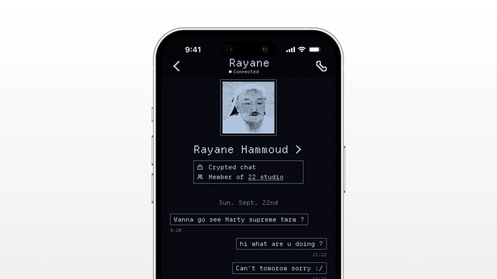
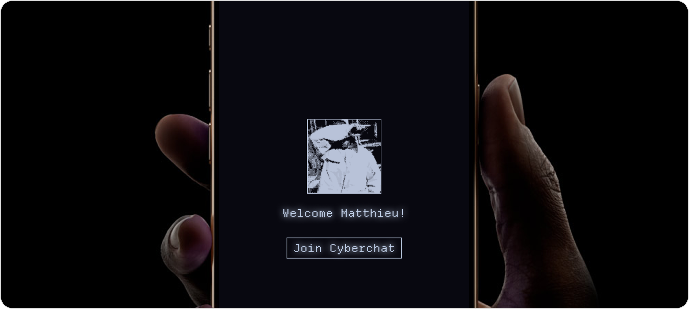
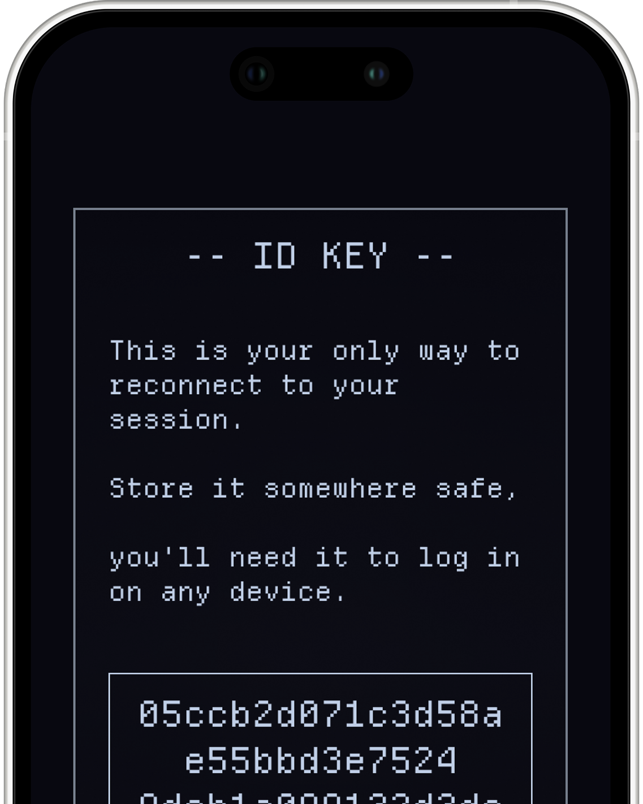
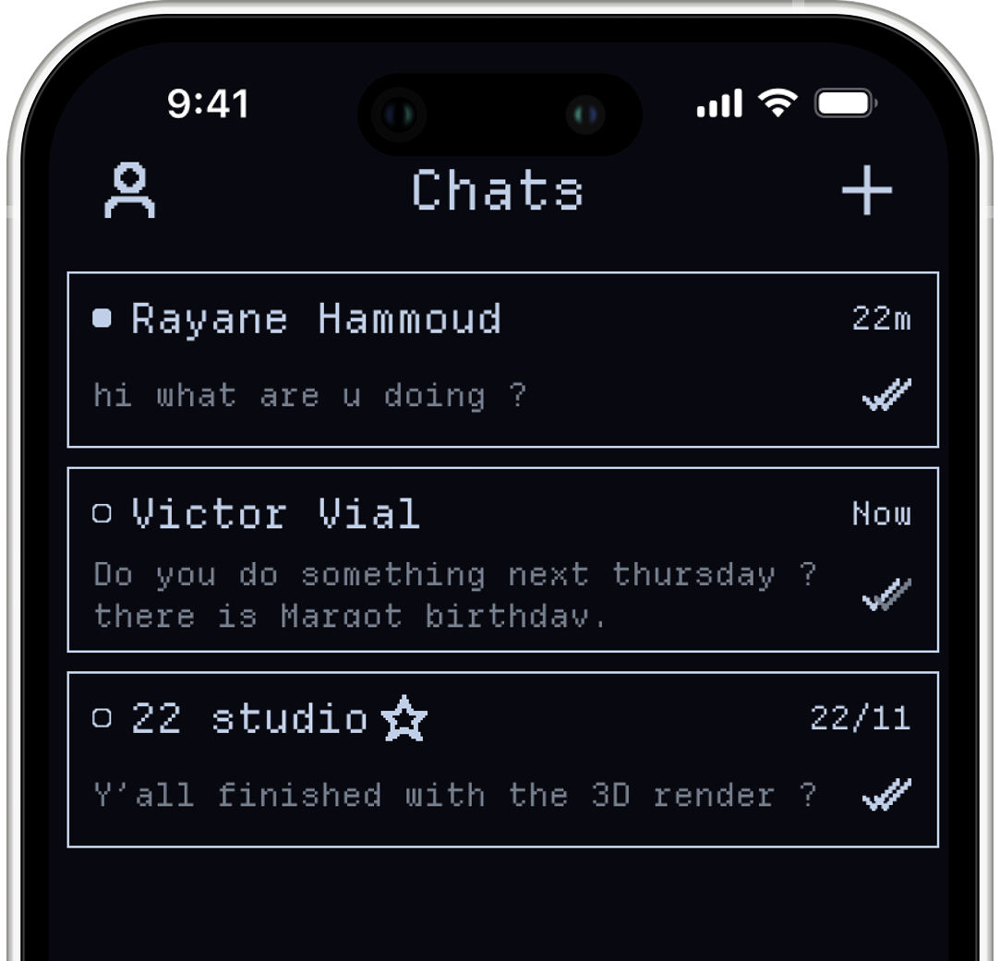
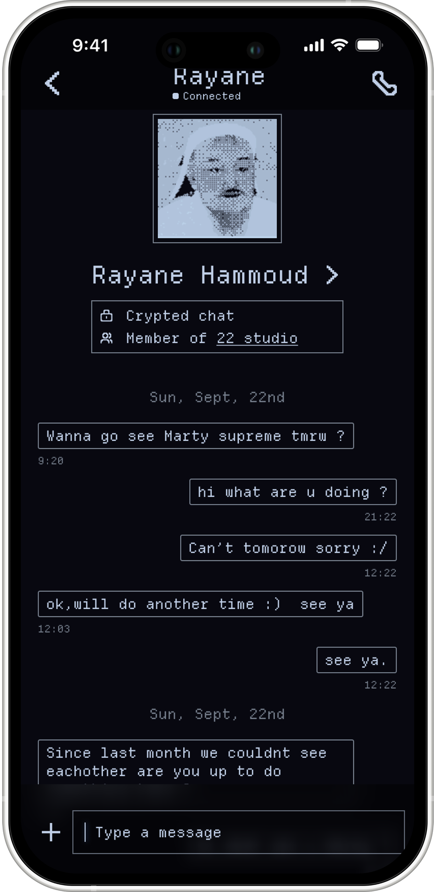
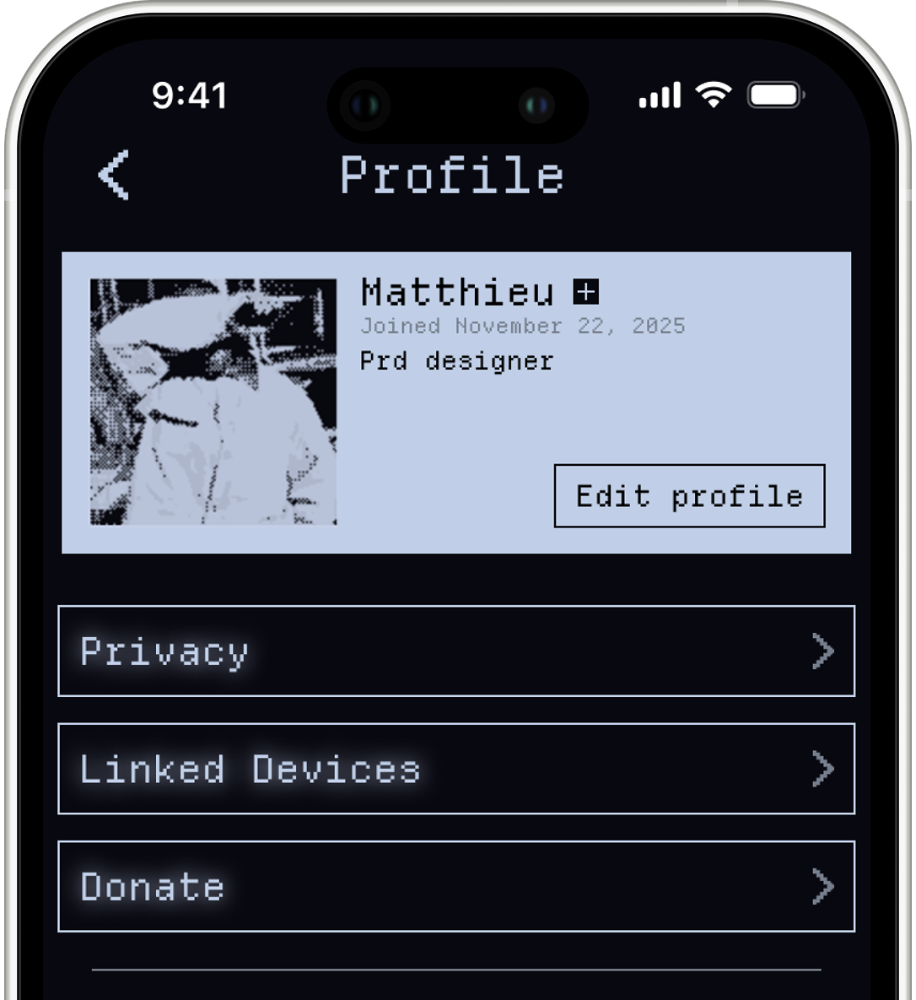
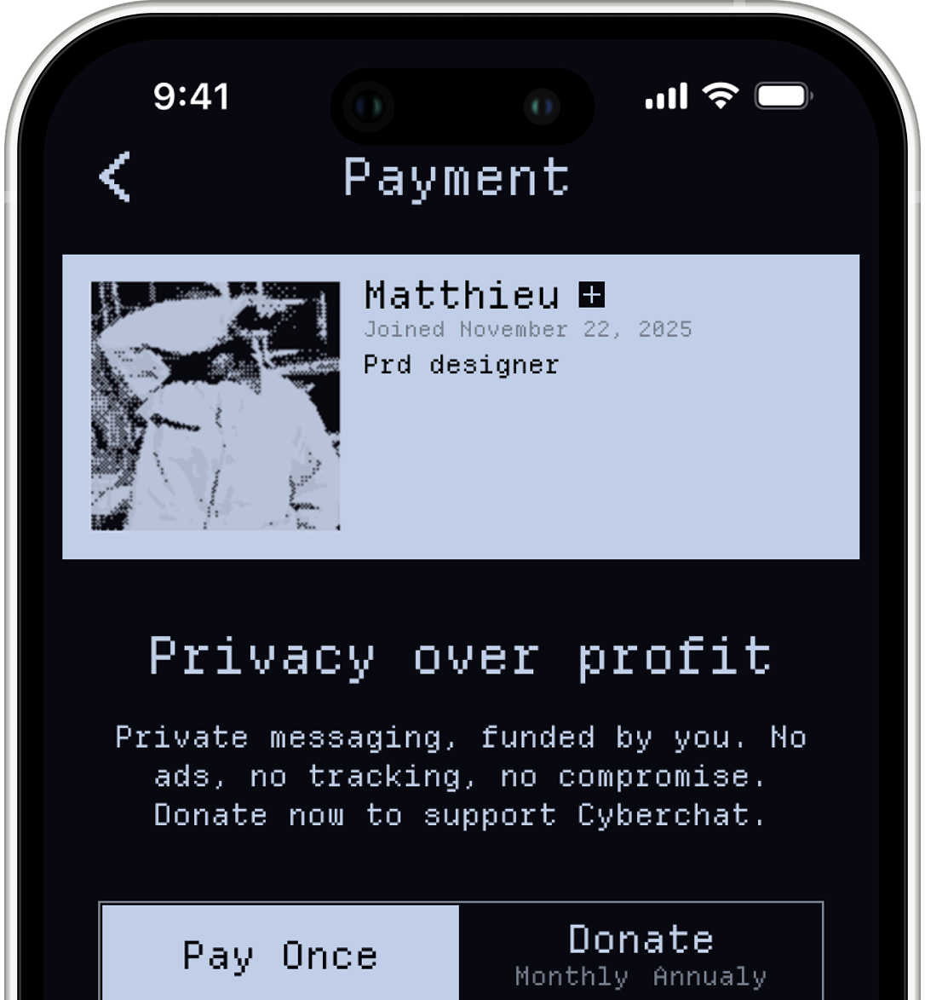
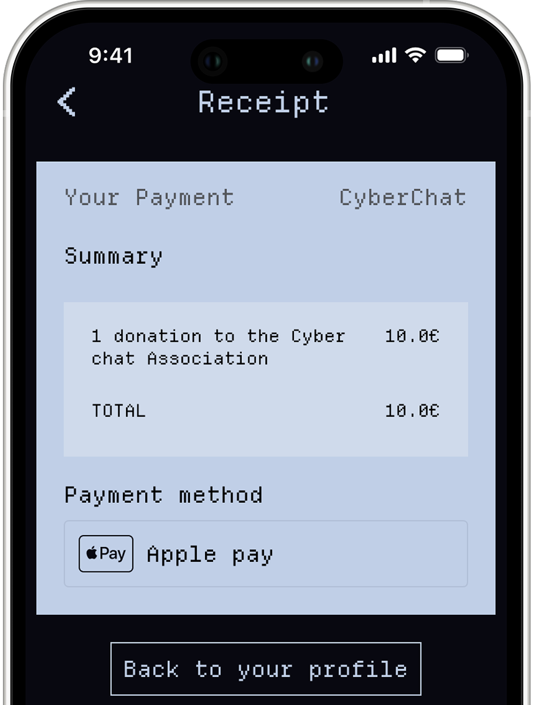

CyberChat
Privacy by design: a messaging concept built around anonymity. No email, no phone number, just a unique key generated at onboarding.
A retro-inspired identity modeled after the Signal Foundation. A showcase of the final screens.
The ID key
The first screen: the app generates your unique identifier and hands it to you, your only way to reconnect. Store it somewhere safe.


No email, no phone number: your ID key is the only identity, and the only way back into your session.
Chats & Calls
Messaging at a glance: chats and calls live on the same page, accessible in one tap.

A stripped-back list: status dots, timestamps and read receipts, nothing else competing for attention.
Smart Context
A small info card under each contact shows encryption status and shared groups, so you always know who you’re talking to and what privacy conditions apply before you even type.

The card confirms the chat is crypted and surfaces shared membership: trust conditions, visible before the first word.
Profile & settings
Profile and settings live together: a dithered avatar, your join date, and quick access to privacy, linked devices and donations, all in one place.

Everything that shapes your account is reachable from a single screen: privacy, linked devices, donations.
Privacy over profit
A donation flow instead of ads or tracking: “privacy over profit”, funded by users, with no compromise.


“Private messaging, funded by you.” The same screen, top to bottom: a one-off or recurring donation replaces ads and tracking entirely.

A plain-text receipt closes the loop: clear, itemised, no dark patterns.